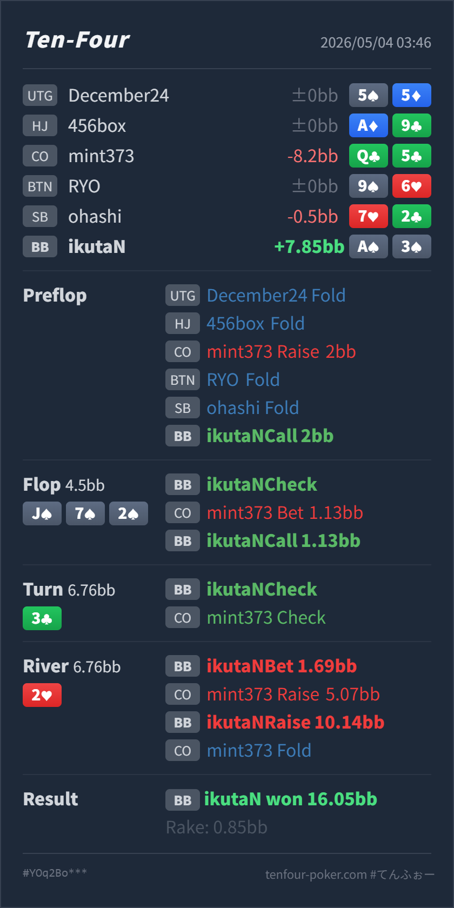

Preflop
良いA♠3♠ は nut flush potential と wheel equity があり、defend できます。
GTO基準で、CO 2BB open に対する BB A♠3♠ の call は自然です。flop J♠ 7♠ 2♠ で nut flush を完成し、CO の 1/4 pot c-bet に check-call した判断も良いです。turn 3♣ の check-check後、river 2♥ で小さく lead したところまではかなり自然です。見直したいのは、CO の raise 5.07BB に対して 10.14BB へ 3bet した点です。Hero は nut flush ですが、river で board が paired したため full house / quads には負けます。標準は call 止め寄りで、3bet は相手が lower flush や trips を raise-call しすぎる時だけに寄せたいです。
A♠ 3♠Q♣ 5♣J♠ 7♠ 2♠ / 3♣ / 2♥nut flush と nuts を分ける。board が paired したら full house が上に残ります。Q♣5♣ raise はかなり広い bluff です。ただし bluff 相手には 3bet しても追加 value はほぼ増えず、call で十分勝てます。A♠ 3♠Q♣ 5♣2BB, BTN fold, SB fold, BB Hero callJ♠ 7♠ 2♠ / 3♣ / 2♥4.5BB, BB Hero check, CO bet 1.13BB, Hero call6.76BB, BB Hero check, CO check6.76BB, BB Hero bet 1.69BB, CO raise 5.07BB, Hero raise 10.14BB, CO fold16.05BB, rake 0.85BB
良いA♠3♠ は nut flush potential と wheel equity があり、defend できます。
J♠ 7♠ 2♠良い
Hero は nut flush を完成しています。
3♣良い
Hero は引き続き非常に強い value hand です。
2♥lead は良い / 3bet は薄い
Hero は nut flushですが、full house には負けます。
| 論点 | その場で置いた見立て | どこがズレやすいか | 次回の基準 |
|---|---|---|---|
| paired river の nut flush | A♠ 持ちなので一番強い flush。raise されてもさらに返せそう | flush 同士では最上位ですが、river 2♥ で board pair になっています。CO には JJ/77/22/J2s/72s などの full house / quads が一部残ります。 | board pair 後は、nut flush でも nuts ではない。raise 返しは full house に踏まれる頻度を先に見る |
| bluff raise への対応 | 相手が bluff なら再raiseで降ろせて良い | Q♣5♣ のような bluff は、Hero が call しても勝っています。再raiseで降ろしても、基本的には bluff から追加 value は増えません。 | bluff を捕まえている時は、薄い3betより call で相手のraise額を確定回収する |
| ストリート | その時点の見え方 | 実ハンドの位置づけ | 評価 | その場の一手 |
|---|---|---|---|---|
| Preflop | CO の 2BB open に対して BB は広く defend できます。suited wheel Ax は call でも 3bet mix でも扱える hand です。 | A♠3♠ は nut flush potential と wheel equity があり、defend できます。 | 良い | call で問題ありません。相手が fold 多めなら 3bet mix も候補です。 |
Flop J♠ 7♠ 2♠ | monotone board で、CO は small c-bet を広く打てます。BB は flush、pair + spade、single spade を多く持てます。 | Hero は nut flush を完成しています。 | 良い | check-call は自然です。check-raise もありますが、small bet 相手には相手の bluff と single spade を残せます。 |
Turn 3♣ | blank 寄りで、Hero は nut flush のままです。CO が check back すると、強い hand も一部残りますが、air / single spade / weak showdown も広く残ります。 | Hero は引き続き非常に強い value hand です。 | 良い | check で問題ありません。相手に river bluff や thin value を打たせる余地があります。 |
River 2♥ | board pair になり、flush の絶対価値は少し下がります。CO の turn check-back range には missed hand も多い一方、2x や slowplay した set も一部残ります。 | Hero は nut flushですが、full house には負けます。 | lead は良い / 3bet は薄い | 1.69BB の small lead は良いです。raise に対しては call が標準です。3bet は相手が lower flush / trips を過剰に raise-call する読みがある時だけで十分です。 |
相手の bluff を降ろす価値 ではなく、worse value が3betに call するか を基準にする。Q♣5♣ のような no spade / no pair で river small lead に raise するなら、small lead 自体はかなり有効です。